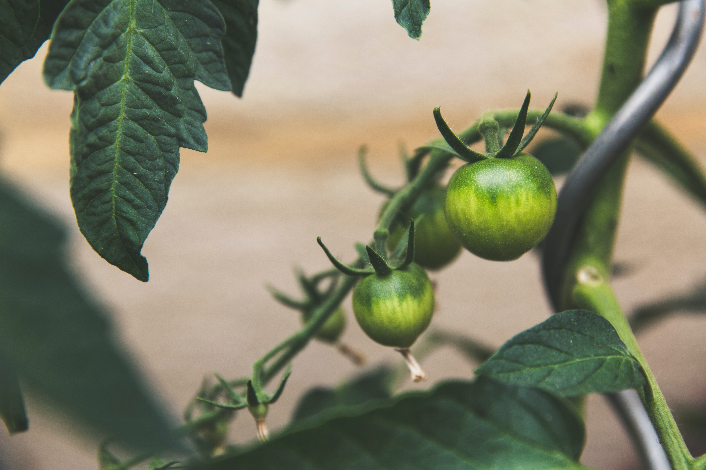

- Definition
- Method
- Application in study
Application in study
Being a vast field of study, Bioinformatics finds applications in various sectors. Here is a list of application of bioinformatics in various fields including:

- Biotechnology
- Alternative Energy Sources
- Drug Discovery
- Preventive Medicine
- Biofuels
- Plant Modelling
- Gene Therapy
- Waste Clean-up
- Climate Change
- Cell Therapy
- Microbial Genome
- Improvement
- Nutrition Quality
- Bio-weapon Development
- Forensic Science
- Veterinary Sciences
- Antibiotic Resistance
- Evolutionary Studies
- Insect Resistance